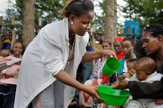
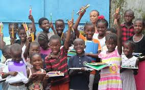

To create a world where every young person understands the importance of water and sanitation and takes action to protect these vital resources.
To educate and empower youth with the knowledge and skills needed to promote water conservation and sanitation practices in their communities.
We offer workshops and seminars on water conservation and sanitation practices.
We provide educational materials and resources for schools and community groups.
Our team consists of educators, health professionals, and environmentalists dedicated to spreading awareness about water and sanitation issues.
We work together to create content that is both educational and fun for young audiences.
We collaborate with various organizations and institutions to bring you the best resources and information.
Our partners include schools, non-profits, and government agencies committed to improving water and sanitation standards worldwide.